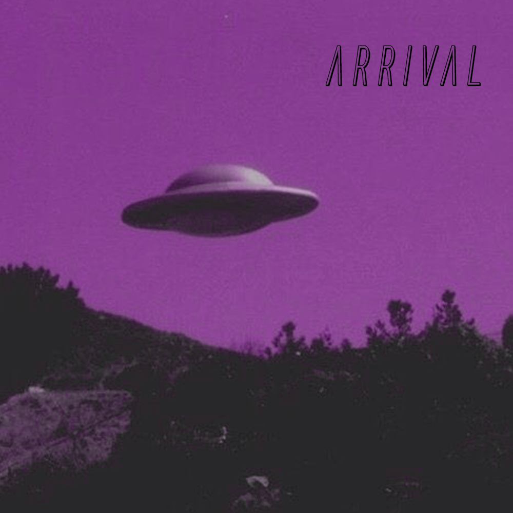
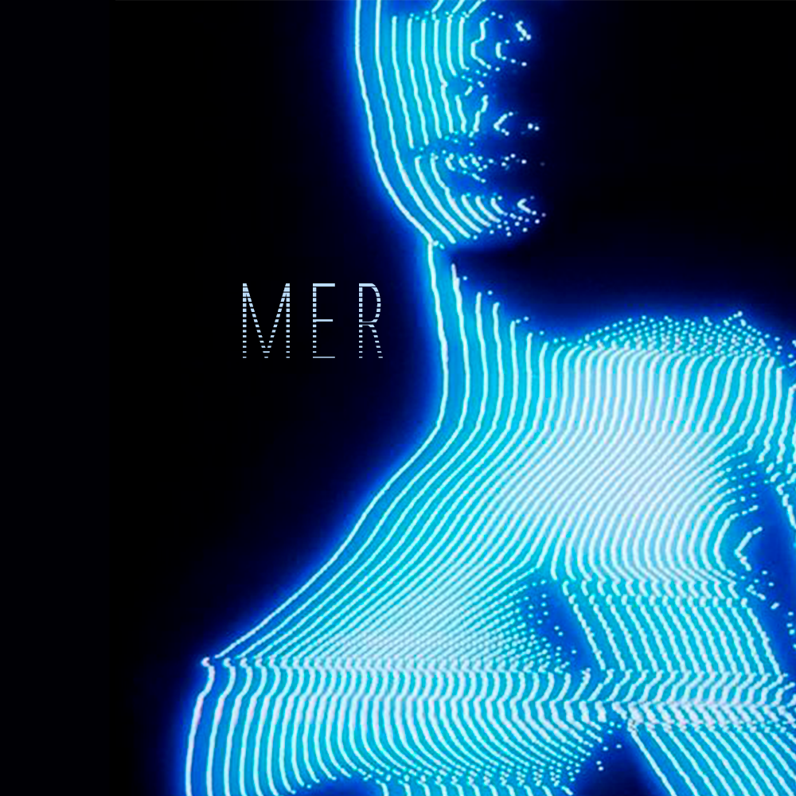
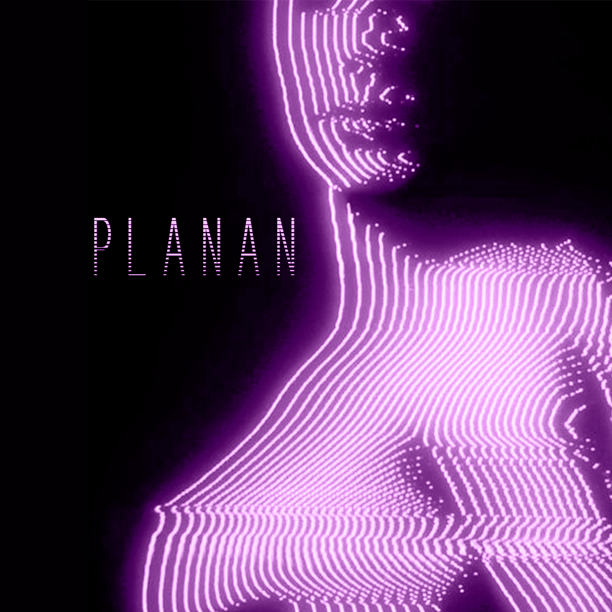
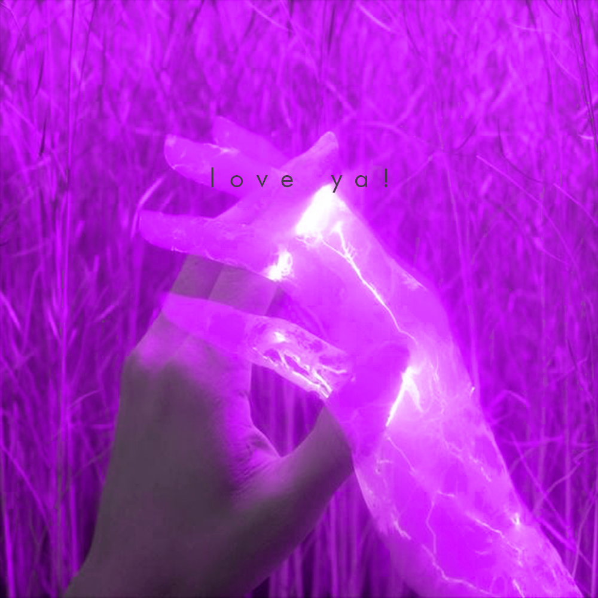
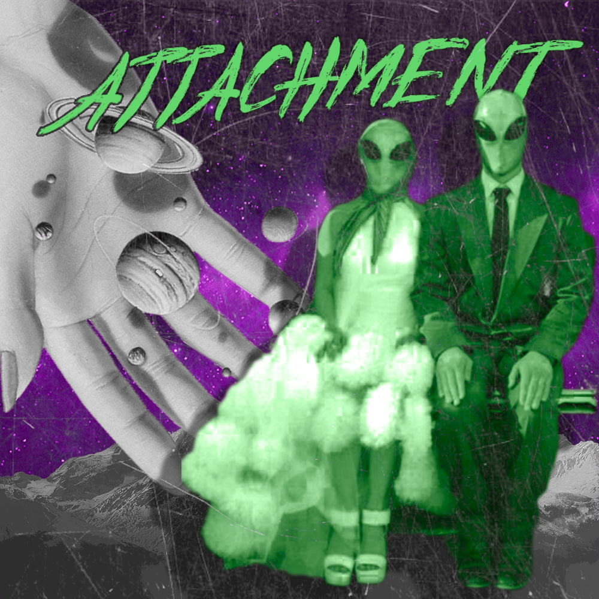
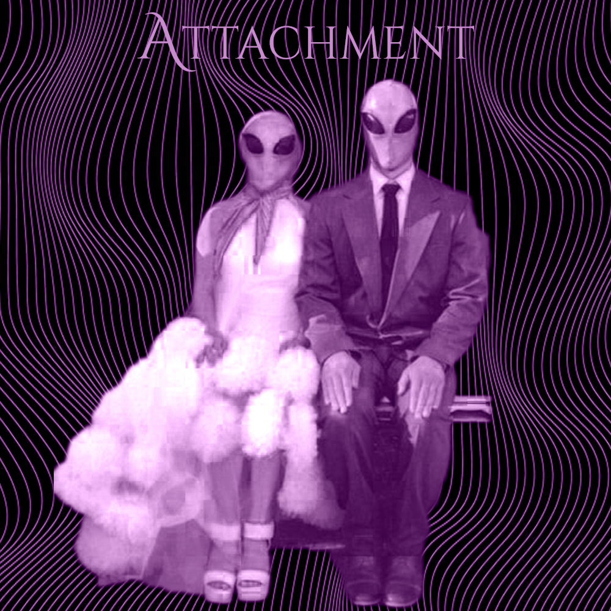

Discografia

Arrival - EP
21 de Novembro de 2018
- A Long Dream - Se So Neon
- Bath - offonoff
- Gurumi - Se So Neon
- Feels Like a Roller-coaster Ride - HYUKOH
- Dancing in the Rain - Rad Museum
- Alone - Miso
- I Have No Hometown - HYUKOH



Planan - EP
30 de Agosto de 2019/p>
- Midnight Train - Se So Neon
- Mer - HYUKOH
- The Museum - Colde
- Cigarette - offonoff (feat. Tablo, MISO)
- Big Bird - HYUKOH
- The Wave - Se So Neon
- Tiny Little Boy - Rad Museum, DEAN
- Jesus Lived in a Motel Room - HYUKOH



Attachment - Full Album
14 de Abril de 2020
A side:
- Don't Leave Me, My Love - Colde
- New Youth - Se So Neon
- Woman - Rad Museum
- This Night - Rad Museum
- in the car - offonoff
- Dance - offonoff
- 23 - punchnello, Sam Kim
- TOMBOY - HYUKOH
- instagram - DEAN
- 2002WorldCup - HYUKOH
- Good2Me - offonoff (feat. punchnello)
- Graduation - HYUKOH
- Out of the Blue - RINI
- Don't Love Me - punchnello
B side:


Planet B25 - EP
16 de Setembro de 2021
- NAN CHUN - Se So Neon
- Overthinking - offonoff
- When Dawn Comes Again - Colde (feat. Baekhyun)
- Gondry - HYUKOH
- Over the Fence - Rad Museum
- Treasure Island - millic (feat. HAN)

Comes and Goes - Single
10 de Janeiro de 2022
- TComes and Goes - HYUKOH
- I'm Watching a Loneliness Just Arisen - Se So NeonPhotograph - offonoff